<!DOCTYPE html>
<html lang="ru">
  <head>
    <meta charset="UTF-8"/>
    <meta name="viewport" content="width=device-width, initial-scale=1.0"/>
    <meta http-equiv="X-UA-Compatible" content="ie=edge"/>
    <title>Touche bar&kitchen</title>
    <link rel="stylesheet" href="style/main.css"/>
  </head>
  <body></body>
</html>
<div class="site-wrapper">
  <div class="shade"></div>
  <header id="site-header-mob">
    <div class="nav">
      <div class="ham-btn"><a href="#"></a></div>
      <div class="nav-wrapper">
        <div class="close-btn"><a href="#"></a></div>
        <ul class="main-nav">
          <li><a class="about-btn" href="#">О нас</a></li>
          <li><a href="images/menu/ToucheMenu_AUTUMNnovember 11 2017.pdf" target="_black">Меню</a></li>
          <li><a href="images/menu/WineList_Touche2017_winter_final 10 2017.pdf" target="_black">Винная карта</a></li>
          <li><a href="images/menu/Bar_List_Touche_summer 05 2017.pdf" target="_black">Барная карта</a></li>
          <li><a href="#">Галерея</a></li>
        </ul>
      </div>
    </div>
  </header>
  <header id="site-header">
    <div class="nav">
      <ul class="main-nav">
        <li><a class="about-btn" href="#">О нас</a></li>
        <li><a href="images/menu/ToucheMenu_AUTUMNnovember 11 2017.pdf" target="_black">Меню</a></li>
        <li><a href="images/menu/WineList_Touche2017_winter_final 10 2017.pdf" target="_black">Винная карта</a></li>
        <li><a href="images/menu/Bar_List_Touche_summer 05 2017.pdf" target="_black">Барная карта</a></li>
        <li><a href="#">Галерея</a></li>
      </ul>
    </div>
  </header>
  <section class="about">
    <article>
      <h1>Touche' wine bar & kitchen</h1>
      <p>Touche’ расположился на территории Трехгорной мануфактуры, став еще одним весомым поводом для поездки на Родчельскую. Владелица проекта — выпускница школы Ragout Лариса Мамедова и ее партнер и шеф-повар Тарас Кириенко, сделали ставку на демократичное винное место.</p>
      <p>
        Touche’ — место, где встречаются друзья. Концепция проекта сформировалась очень быстро, и все внутренние процессы выстраивались вокруг нее. Меню, например, условно разделено на две части. В одной из них блюда рассчитаны на одного человека, в другой - много закусок, которые удобно делить на компанию. В винной карте большая подборка бокальных позиций благодаря системе coravin, что позволяет каждому гостю продегустировать вина, ориентируясь только на свой вкус. 
        
      </p>
      <p>С распределением главных ролей здесь все просто. Лариса Мамедова — идейный вдохновитель, ее часто можно встретить в зале за общением с гостями, на кухне карт-бланш у Тараса Кириенко.</p>
      <p>Тарас создавал меню, не следуя лишь одному гастрономическому направлению. Его блюда — это авторское прочтение мировых трендов, современные технологии и многолетний опыт работы. Помимо основного меню в баре действует специальное обеденное, действующее ежедневно с 12:00 до 16:00.</p>
      <p>Винная карта включает 245 позиций и рассчитана как на знатоков, так и на любителей. Ценовой диапазон очень широкий и берет свое начало с категории «демократично» от 1100 рублей за бутылку, заканчивая бордоскими и супертосканскими винами свыше 100 000 рублей. В целом, если познания в вине только начинают формироваться, то именно здесь можно экстерном получить высшее винное образование. В подборке широко представлен Старый и Новый Свет, вина российских производителей, ну и конечно же, модная органика и биодинамика.</p>
      <p>Еще один мастерский выпад — интерьер. Им занималась команда архитектурного бюро POLYGON. Дизайнерам удалось уловить и точно передать настроение проекта. Темные тона, мягкий свет, много стекла, большие винные шкафы вдоль бетонных стен — здесь хочется сидеть у окна, пить любимое вино и не смотреть на часы…</p>
      <p>Последняя атака — магазин №22, расположенный дверь в дверь с Touche'. Там продается все, что нужно жителю Трехгорки — блюда из ресторана, завтраки, свежий кофе, молочные продукты. Быстро и удобно.</p><br/>
    </article>
    <button class="btn close-about">Закрыть</button>
  </section>
  <div class="centerer">
    <div class="logo"></div>
    <div class="contacts">
      <address>
        <ul>
          <li><a href="//yandex.ru/maps/213/moscow/?mode=search&amp;text=Rochdelskaya%20Street%2C%2015%2C%20стр.%2022%2C%20Moskva%2C%20123022&amp;sll=37.620393%2C55.753960&amp;sspn=1.139832%2C0.476298&amp;ll=37.562748%2C55.755586&amp;z=16">Rochdelskaya Street, 15, стр. 22, Moskva, 123022</a></li>
          <li><a href="tel:84957987828">+7 (495) 798-78-28</a></li>
        </ul>
      </address>
      <div class="social">
        <ul>
          <li><a href="//www.facebook.com/Touchewinebar/"></a></li>
          <li><a href="//www.instagram.com/touchewinebar/"></a></li>
        </ul>
      </div>
    </div>
  </div>
  <footer id="site-footer">
    <div class="bottom"> <span>Все права защищены. Touche Москва 2017</span></div>
    <script src="js/main-min.js"></script>
  </footer>
</div>